Ben je elektricien en woon je in Lier of de Antwerpse Zuidrand?
Ontdek of jij in aanmerking komt voor een job als technieker bij Electro Zwijsen!
- Vast contract
- Dertiende maand
- Geen CV nodig
Solliciteer in 30 seconden
Doe de test. Beantwoord 4 korte vragen.
Wat maakt deze job de moeite waard?
- Grote wervenWerk aan ziekenhuizen, scholen, kantoorgebouwen, winkelcentra,…
- Breed takenpakketBouw mee aan elektrische installaties van a tot z.
- AfwisselingGeregeld nieuwe projecten, verspreid over heel België met zwaartepunt in Vlaanderen.
- Vrijheid in je vakJe werkt zelfstandig in team. Het resultaat telt.
- In duoJe rijdt samen met een ervaren collega uit jouw regio naar de werf.
- Vast contractVanaf dag één ben je aan boord bij ons familiebedrijf met 150 collega’s.
Wat zijn jouw voordelen?
- Goed loon, volgens ervaring
- 20 vakantiedagen en 12 ADV
- Vakantiegeld
- Uitgebreide hospitalisatieverzekering voor jou én je gezin, inclusief tandzorg en ambulante medische kosten
- Telefoon met abonnement
- Groepsverzekering
- Maaltijdcheques 9 euro per gewerkte dag
- Dertiende maand
- Kilometervergoeding tot de werf
- Werkkledij
- Beschermingsmateriaal
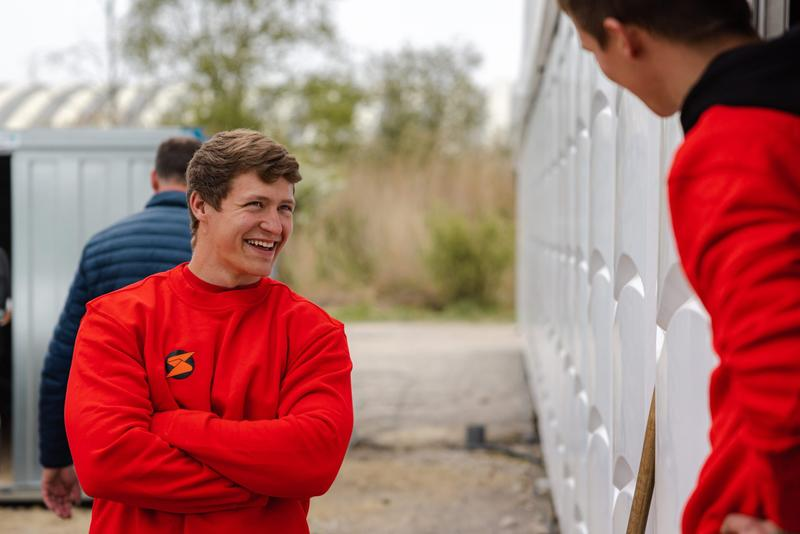
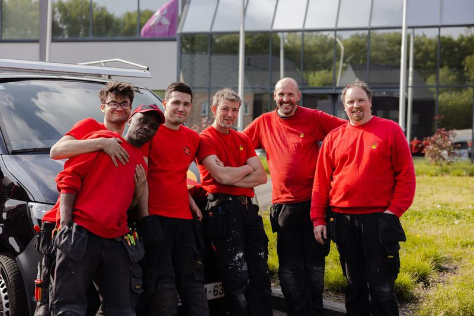
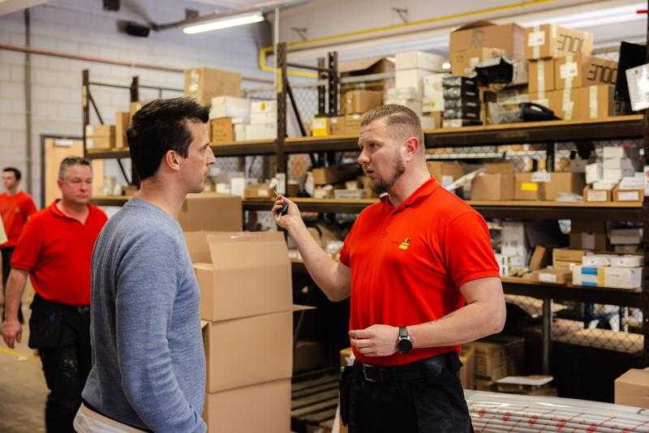
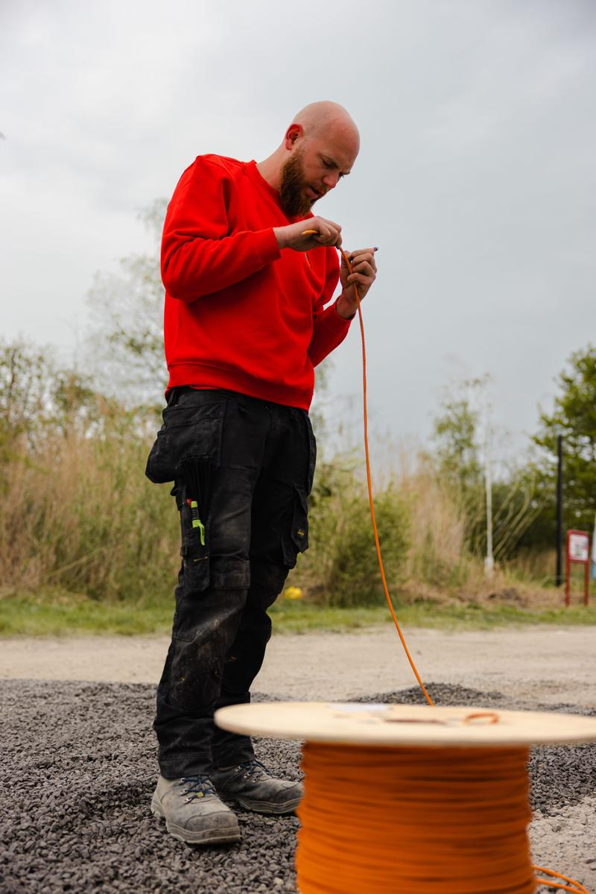
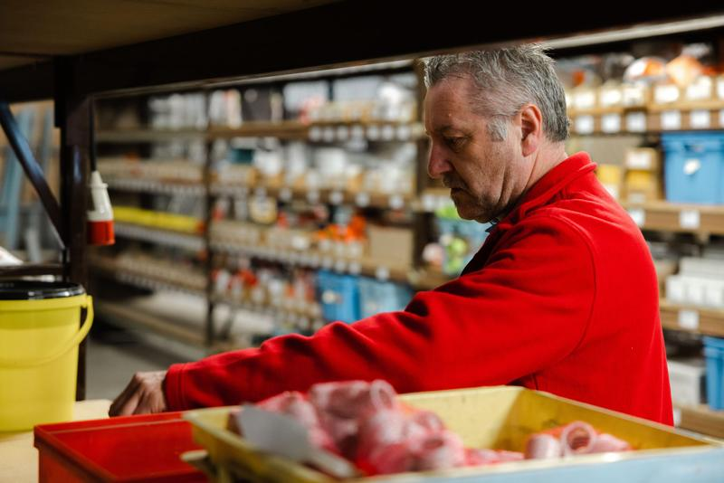
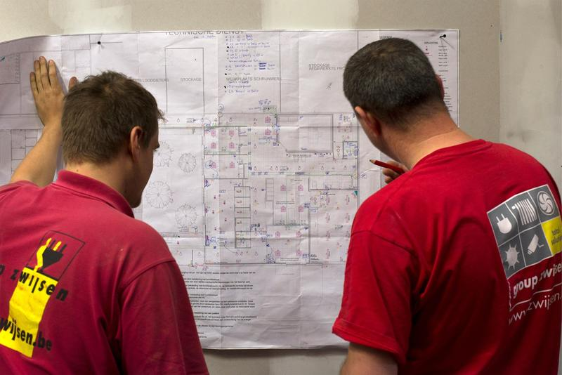
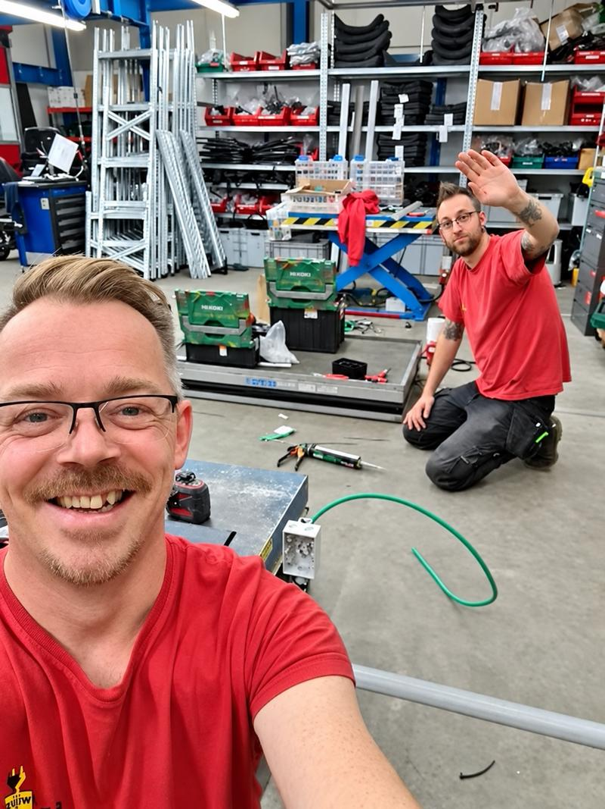
Veeg opzij voor meer foto’s →
Wat ga je doen?
Je bouwt nieuwe elektrische installaties van a tot z op grote werven, samen met je collega’s.
- Kabelgoten plaatsen
- Kabels trekken
- Schakelmateriaal plaatsen
- Verlichtingstoestellen aansluiten
- Aansluitingen maken in verdeelborden
- Zorgen dat het volledige project goed wordt opgeleverd
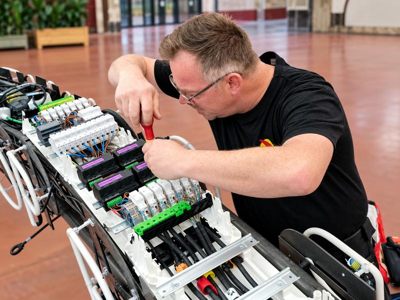
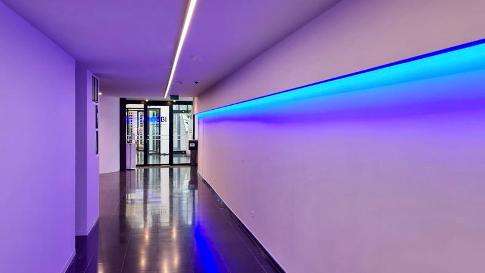
Word jij onze nieuwe technieker?
- Minstens 3 jaar ervaring als elektricien
- Je woont in (of vlakbij) Hoboken, Wilrijk, Edegem, Mortsel, Hove, Boechout, Lint, Kontich, Duffel of Lier
- Je hebt minstens rijbewijs B
- Taal is geen barrière. Je begrijpt en spreekt voldoende Nederlands, Frans of Engels om veilig samen te werken.
- In het bezit zijn van een VCA-attest is een plus. Heb je het niet, dan voorzien wij een opleiding.
- Ervaring op werven is mooi meegenomen.
Hoe ziet je dag eruit?
- Samen naar de werfJe rijdt samen met je collega uit de regio naar de werf.
- Werven in heel BelgiëDe werven zijn in heel België, met focus op Vlaanderen. Soms werk je dicht bij huis, soms ligt een project verder weg.
- KilometervergoedingVoor de verplaatsing krijg je een kilometervergoeding als chauffeur of bijrijder.
- Maandag tot vrijdag, 40 uurJe werkt van maandag tot vrijdag, 40 uur per week. Overuren of zaterdagwerk zijn uitzonderlijk.
Wij zijn Electro Zwijsen
Wij zijn een hecht familiebedrijf van 150 collega’s. Het hoofdkantoor is in Duffel en we hebben ook een filiaal in Zonhoven. Sinds 1987 zijn we expert in elektriciteit. Naast algemene elektriciteitswerken bouwden we doorheen de jaren expertise op in midden- en hoogspanning, datanetwerken, elektrische laadinstallaties en beveiliging, van branddetectie tot inbraakbeveiliging. Kansen genoeg voor wie wil doorgroeien. Wij zijn een werkgever die expertise naar waarde schat.
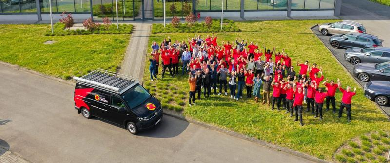
Waarom kies je voor Electro Zwijsen?
“Ik hou van de afwisseling in mijn job. Geen twee werven zijn hetzelfde. Zelfs na al die jaren kom ik nog geregeld iets tegen waarvan ik denk: dat wist ik nog niet.”
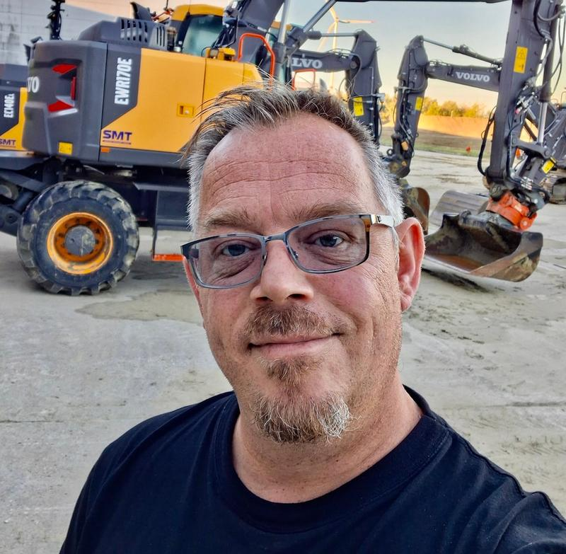
“Ik weet wat ik aan Zwijsen heb: een correcte werkgever die altijd stipt betaalt en toffe collega’s met wie ik graag samenwerk. Dat is belangrijk, want je brengt veel tijd met elkaar door. Doorheen de jaren heb ik ook veel opleidingen kunnen volgen: voor de hoogtewerker, schaarlift, heftruck en VCA.”
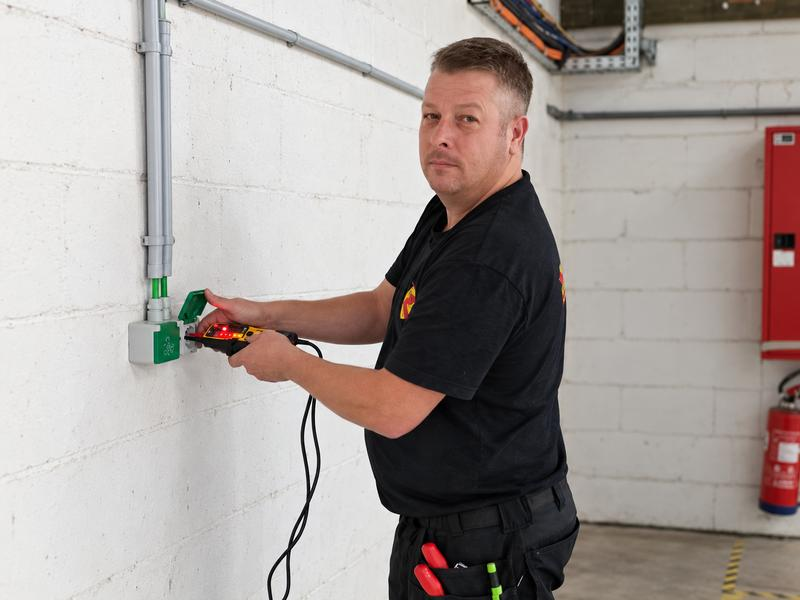